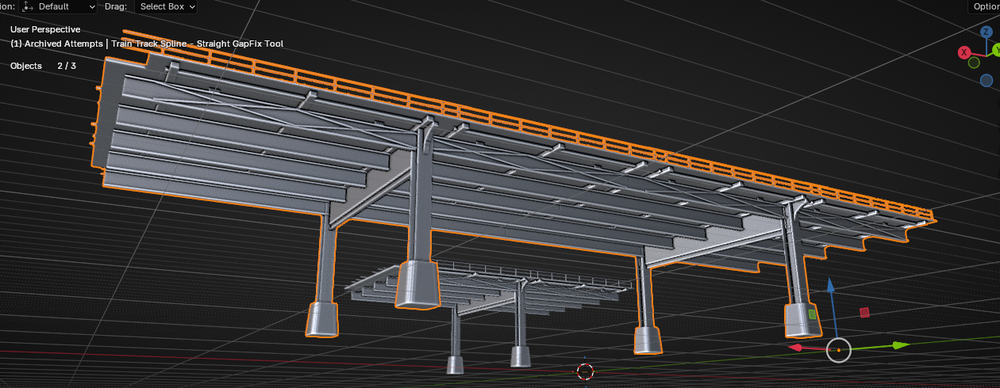
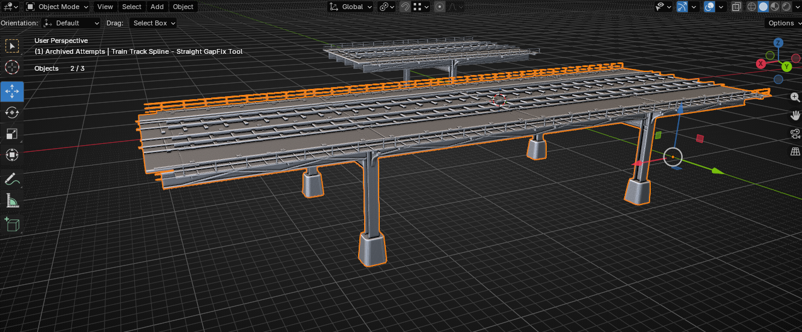
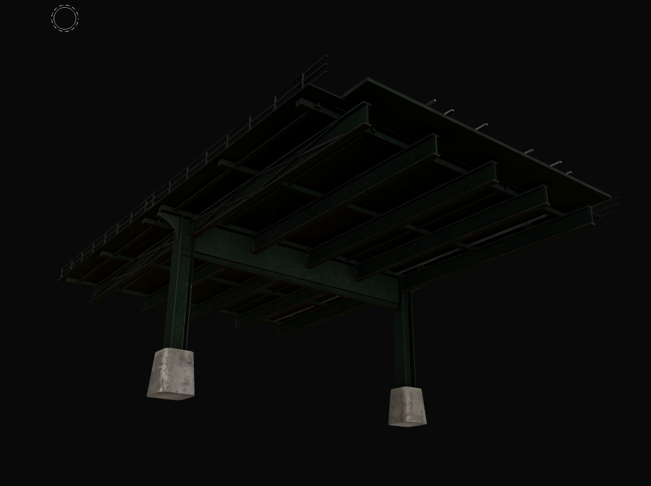
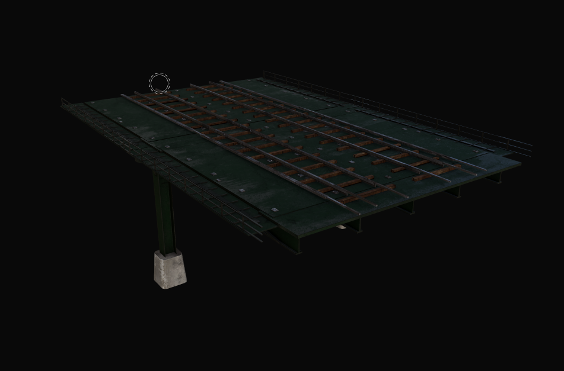

Recent changes
- Detain escort timers, retry, custody handoff, and auto-release
- Uniformed NPC police escorts with schedule-driven movement
- WANTED, DETAINED, and ARRESTED overhead and HUD feedback
- Ragdoll cleanup around stuns, falls, and recovery
- New downed, bleedout, and self-recovery state
- Stun and downed third-person camera tracking
- SMG taser variant balance pass
- Slightly slower tase recovery time
- Further electrical taser VFX polish
- NPC taser impact, tracer, and muzzle-flash arcs
- Custom Terry-fit taser shock skeleton and rig
- Bone-force ragdoll jitter for stunned movement
- SWAT dispersal orders with Failure to Disperse escalation
- General MVP bug fixes and optimization
- New police CV vehicle prefab and imported vehicle parts
- Host-owned queues and timed offers for capped jobs
- Unified world-use targeting for police, doors, NPCs, and vehicles
- Street weed-buyer sale safeguards
- New performance diagnostics and MCP tooling
- AfterDark splash/logo and tactical vest material refresh
- Train-track spline and support cleanup
- Quick engine paint sample for the train platform
Arrest and taser polish
The arrest loop is easier to read and more reliable when several systems overlap. Detained players now move through clearer escort-call, retry, custody, and failure-release timing. NPC police escorts received police clothing and schedule-driven movement, while HUD and overhead labels distinguish WANTED, DETAINED, and ARRESTED states.
A new downed state can turn lethal damage into a temporary ragdoll with bleedout or self-recovery instead of immediately jumping to respawn. Stun and downed cameras now track the body presentation, and NPC police can follow the moving stun body instead of aiming at the old pawn position. Release flow and edge cases still need real playtesting.
The SMG taser is moving toward a pressure tool instead of a one-button arrest. Recovery was slowed slightly and probably still needs another balance pass. NPC taser fire also received separate impact, tracer, and muzzle-flash arc effects.
The shock skeleton became a full feature pass of its own. I custom-deformed it to fit the Terry character, rigged it, wired the trigger, and layered several pieces together to get a more cartoon-like visual. Force is applied directly to the ragdoll bones to create the jittering stunned movement instead of leaving the body completely static.
Sound effects are still needed. The plan is to support separate male and female reaction audio selected through character customization. The screenshot below shows an earlier electrical VFX test; the current effect has already received a more polished pass.
City systems and tooling
The MVP work also moved beyond the arrest loop. A new police CV vehicle was imported with a driveable prefab and separated body/wheel parts.
Capped jobs now have host-owned FIFO queues with timed offers when a slot opens. SWAT can issue a dispersal order with a grace period before Failure to Disperse adds a charge, wanted level, and heat. A unified world-use pass now arbitrates police, door, NPC, hold-use, vehicle, and normal interactable targets so one use press is less likely to leak into the wrong system.
Street weed buyers gained extra seller and buyer-state safeguards, and the broader presentation pass added an AfterDark splash/logo plus another material update for the Type 18 tactical vest. New performance diagnostics and MCP tools expose frame timing, render counts, GPU scopes, allocations, garbage collection, and memory data for the next optimization passes.
Train-platform art pass
The train-track spline received another cleanup pass so repeated infrastructure is easier to author without duplicated supports or unnecessary manual correction.
I also pushed a quick paint sample far enough to judge how the platform might feel in-engine. It is not where I want it yet, especially the wood planks, and some side heights are wrong. Trim sheets are probably the better long-term solution, but paint gets the asset testable quickly. I am letting the smaller issues go for now and moving on.




Short-term direction
- Continue arrest, escort, custody, and release playtesting
- Tune tase recovery again
- Push ragdoll edge-case cleanup
- Validate taser VFX at different distances and lighting levels
- Add customization-driven male and female taser reaction audio
- Keep profiling the growing city simulation
A short return to Exile
For the next few days, development is switching back to Exile while the current AfterDark branch gets cleaned up.
The latest AfterDark work exposed some project-side stability problems, so pushing harder on new features is not the best use of time until that branch is easier to test again.
Exile gives us a productive place to keep moving for a few days while the AfterDark cleanup work catches up. Once that is stable, the next pass will be more footage, more runtime validation, and another look at the arrest and taser tuning in context.
Signed, Nightshift